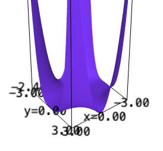

Backlinks
1 Partial Derivatives
Find all the first, second, and third partial derivatives for the following functions. Also, draw a picture of them!
1.1 \(f(x,y) = 7x+2x^2y^3 + 10y^2\)
f(x,y) = 7*x+2*x^2*y^3 + 10*y^2 plot3d(f, (x,-3,3), (y,-3,3))

- \(f_x = 7+4xy^3\)
- \(f_y=6x^2y^2+20y\)
- \(f_{xy} = 12xy^2\)
- \(f_{xx} = 4y^3\)
- \(f_{yy} = 12x^2y + 20\)
- \(f_{xxx} = 0\)
- \(f_{yyy} = 12x^2\)
- \(f_{xxy} = 12y^2\)
- \(f_{yyx} = 24xy\)
1.2 \(f(x,y) = 3xy^3 + 8x^2y^4\)
f(x,y) = 3*x*y^3 + 8*x^2*y^4 plot3d(f, (x,-3,3), (y,-3,3))

- \(f_x = 3y^3 + 16xy^4\)
- \(f_y=9xy^2+32x^2y^3\)
- \(f_{xy} = 9y^2+64xy^3\)
- \(f_{xx} = 16y^4\)
- \(f_{yy} = 18xy + 96x^2y^2\)
- \(f_{xxx} = 0\)
- \(f_{yyy} = 18x + 192x^2y\)
- \(f_{xxy} = 64y^3\)
- \(f_{yyx} = 18y+192xy^2\)
2 Puzzled Classmate
Suppose that one of your classmates reports that for a particular function \(f(x,y)\), the partial derivatives are:
\begin{equation} \begin{cases} \frac{\partial f}{\partial x} = 2x + 3y \\ \frac{\partial f}{\partial y} = 4x + 6y \end{cases} \end{equation}Do you believe them? Why or why not?
I do not.
If we take the "integrals" along the \(y\) and \(x\) dimensions, we result the following:
- \(\int 2x+3y\ dx = x^2+3xy + c\)
- \(\int 4x+6y\ dy = 3y^2 + 4xy + c\)
The two resulting functions are not in the same family of functions. Therefore, I do not believe my classmate in this regard.